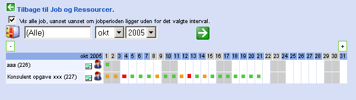
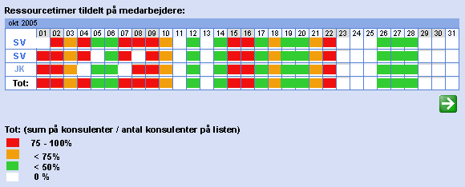

|
 Princip skitse. |
Oversigt over job i den valgte månded. I denne oversigt
kan man få overblik måned for måned over hvornår hver enkelt job skal være afsluttet. Farvemarkereingen skifter alt efter hvor mange konsulenter der tilknyttet på opgaven. Der kan vælges månede i dropdown listen og ved klik på + og -. |
|
 Princip skitse. |
Oversigt over konsulenter og virksomhedstotal i den valgte månded.
I denne oversigt kan man få overblik måned for måned over hvornår hver enekelt konsulent er hhv. fra 0 % til 100% booket.
Nederst er der en virksomhedstotal, der sumerer op på de konsulenter der er på listen. En 100% booket, en 50% booket og en 0 % booket konsulent giver en virksomhedstotal på 50% på den enkelte dag. Der tildeles % ved at klikke på dagen udfor den enkelte konsulent og derefte vælge fra en dropdown hvor mange % konsulenten er booket den dag (og på hviket job.) Siden suppleres evt. en oversigt over de kommende måneder. |